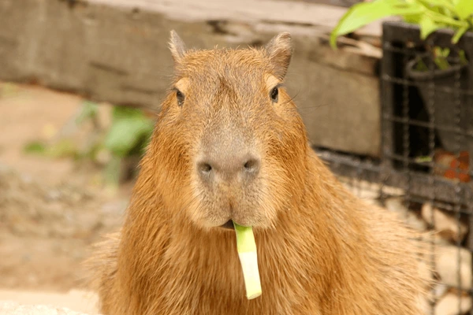
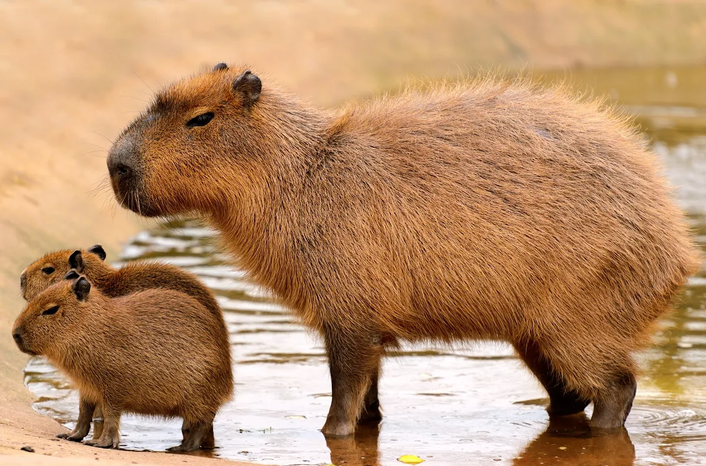
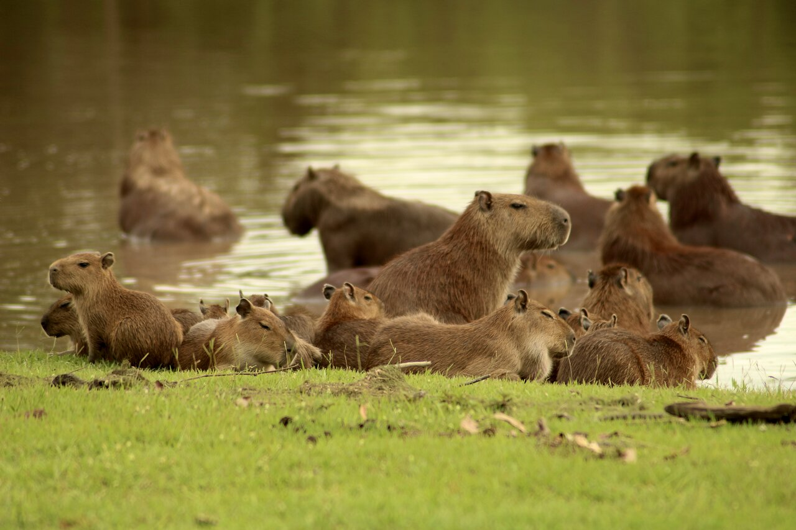
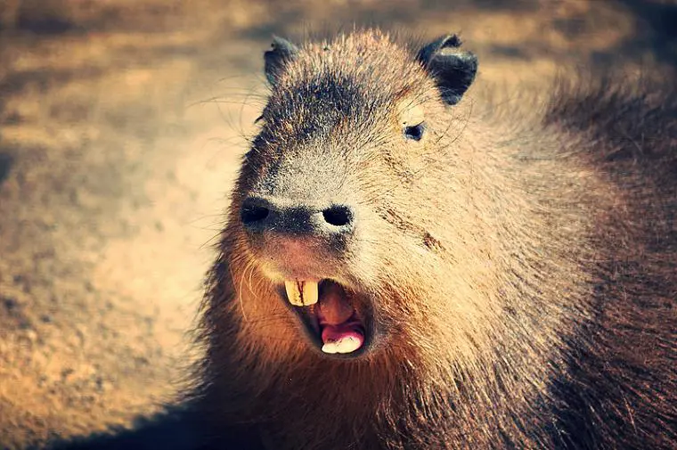

Que mange le capybara ?
Le capybara est herbivore. Il se nourrit principalement
d'herbes et de plantes aquatiques mais il peut aussi
consommer des céréales, des fruits, des écorces
d'arbres et divers végétaux.

D'où vient le capybara ?
Le capybara est originaire d'Amérique du Sud.
Il vit principalement au Brésil, au Vénézuela,
en Colombie et en Argentine.

Où vit le capybara ?
Le capybara vit proche des lacs et des fleuves,
principalement dans des prairies inondables mais aussi
des marécages, des berges ou des estuaires.

Quelle est la taille du capybara ?
Le capybara est le plus gros rongeur du monde !
Il mesure entre 1 et 1,35 m et pèse entre
30 et 65 kg.

Le capybara est-il sociable ?
Le capybara vit en troupeaux d'environ 10 à 20 individus.
Il est rare de voir des capybaras solitaires.

Le capybara est-il menacé ?
Le capybara n'est pas une espèce menacée.
Cependant, il reste chassé pour sa viande
et sa peau.